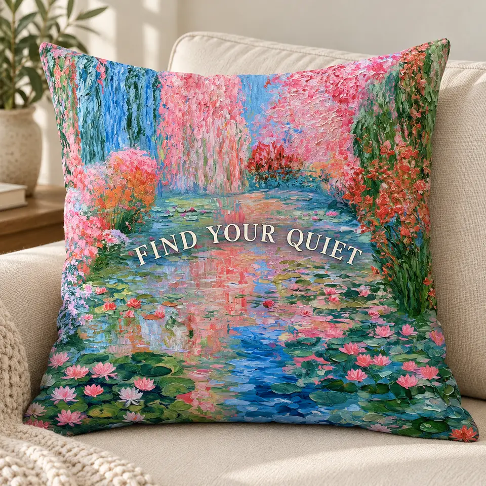

İNGİLİZCE SÖZLER / DESENLE BÜTÜNLEŞEN YAZILAR
Sanat, biraz
daha yakından.
Yazılar artık desenin bir parçası.
Her grupta 8 İngilizce sözlü, 2 yalnızca desenli örnek. Çiçeklerin arasında, gökyüzünde veya resmin boşluklarında; her ürüne ayrı bir yerleşim.
—Hazır örnek
19Ürün grubu
10Her grupta örnek

Yalnızca ürün üzerine uygulanmış tasarımlar.Yeni örnekler hazırlanıyor…
DOKU, MALZEME VE DOĞAL IŞIK
Yeni örneklere göz at.
Bir ürüne dokun, detayını incele.
Beğendiğin örnekleri kalp ile işaretle.
Örnekler yükleniyor…FOTOGERÇEKÇİ AI ÜRÜN ÖNİZLEMELERİ
Bu seçimde henüz örnek yok.
Filtreleri değiştirebilirsin. Hazırlanan yeni örnekler bu sayfaya eklenir.
Bu seçki, Midjourney desenlerinin ürün üzerinde nasıl görünebileceğini değerlendirmek için AI ile oluşturuldu. Görseller gerçek ürün fotoğrafı veya Printify üretim onayı değildir. Diğer tasarımlar bu örnekler hakkındaki değerlendirmen sonrasında yenilenecek.